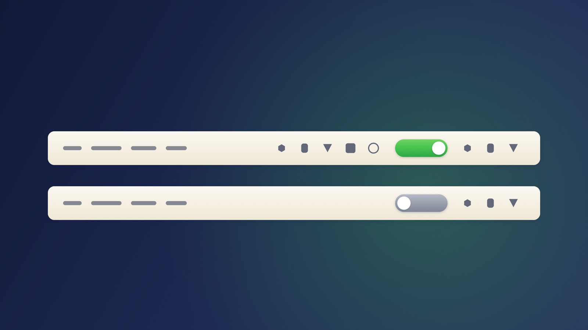

更优雅的菜单栏开关
留白是 macOS 27 上的菜单栏折叠工具。一个开关，把不常用的图标收起来，需要时再放出来。

一眼看懂现在的状态
开关本身就是状态指示，不需要再记住一个箭头方向。

展开
圆点在右、底板绿色。菜单栏完整，所有图标可见。

折叠
圆点在左、底板灰色。开关左边的图标全部收起，右边保持可见。
几个关键取舍
不追求功能多，只把“收起菜单栏”这一件事做干净。
24 ms
并发扫描
每次折叠都会重新读取所有 App 的图标位置，60+ 个 App 并发查询，热态只需二三十毫秒。
0
无后台服务
一个 172 KB 的菜单栏进程，没有守护进程、没有网络请求、没有遥测。
⌘
用系统的方式排序
按住 ⌘ 拖动图标即可决定收哪些、留哪些，顺序由 macOS 自己记住。
MIT
完全开源
Swift + 50 行 ObjC 桥接层，不依赖第三方库，Command Line Tools 即可编译。
安装
必须放在 /Applications，系统的菜单栏白名单只认这个目录。
- 下载 dmg，打开后把 BlankTop 拖进 Applications。
- 首次运行会请求「辅助功能」权限，在「系统设置 → 隐私与安全性 → 辅助功能」里勾选「留白」。
- 按住 ⌘ 把想隐藏的图标拖到开关左边，点一下开关即可。
配置
~/Library/Application Support/BlankTop/config.json
{
"hotkey": "opt+cmd+h",
"autoCollapseSeconds": 0,
"icon": "toggle",
"expandMode": "allowlist",
"sound": "tink",
"soundVolume": 0.12
}
icon 支持 18 种样式（toggle / chevron / dot / eye / tray / moon / compress …），
也可以在右键菜单里直接切换；sound 可选 tink / pop / purr / bottle / none。
已知限制
- 系统白名单只对
/Applications下的 App 生效，包括你想保持可见的第三方 App。 - 隐藏按 App 进行：一个 App 有多个图标时，它们一起隐藏或一起显示。
- 时钟、Wi-Fi、控制中心、电池由系统项 ID 保护，永远可见。
- 依赖 macOS 27 的私有框架，Apple 改动它时这个工具会失效——同类工具都一样。